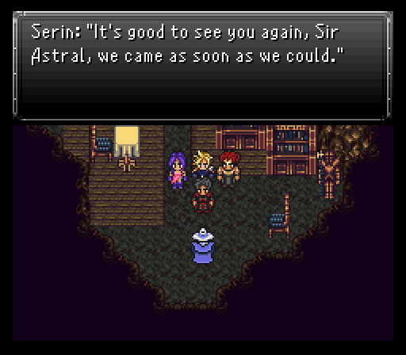
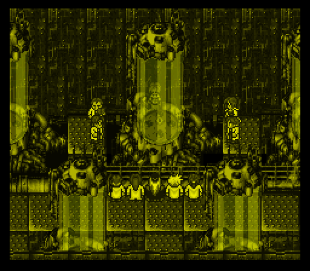
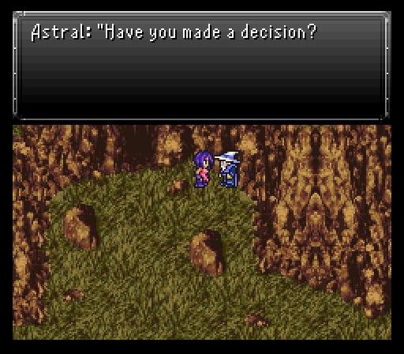
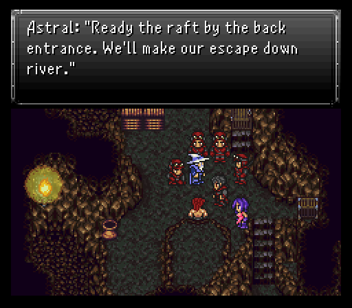
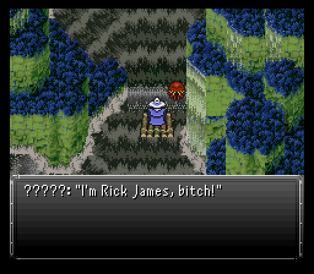
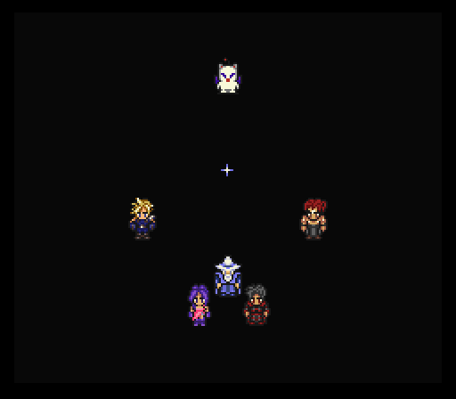
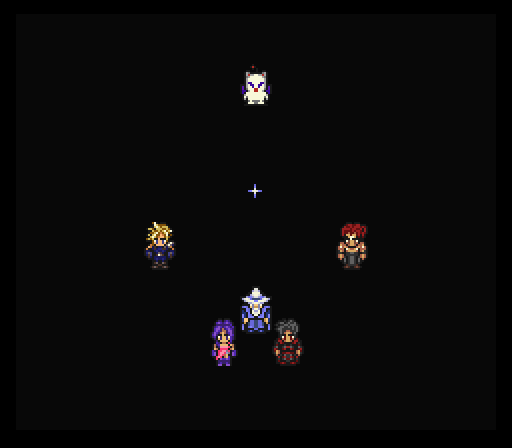

Part 4: Crimson Blades' Hideout
Sir Astral and the Meandering River
Once you exit the mountain, follow the path to the right, go across the bridge and we've reached our destination.

Time to see if Astral can offer some support to deal with the Blackthorn Empire. First though, let's talk a bit about our newly acquired character, Ronan.
Ronan is all about elemental damage as evidenced by his Combo command. Same concept as Sabin from vanilla with inputting commands for the desired attack, but with a twist...each attack has an element to it. Fists of Thunder is lightning, Aura Blast is holy, and Meteor Smash is earth.
Also new to 2.0 is something he did during his scuffle with Raditz last segment. He has a chance to pull a Umaro while attacking normally and instead just plain body check his target. This strike will ignore the enemy's defense.
Combo:
- Thunder Fist - Chi-Lightning infused punches. (learned at level 1)
- Aura Blast - Chi-Holy energy beam attack. (learned at level 1)
- Meteor Smash - Chi-Earth slams an enemy. (learned at level 12)
- Rising Phoenix - Chi-Fire engulfs all enemies. (learned at level 17)
- Crippling Strike - Chi-Poison drains spiritual essence. (learned at level 22)
- Whirlwind Cut - Chi-Wind slashes all enemies. (learned at level 30)
- Blizzard Cannon - Chi-Ice crushes all enemies. (learned at level 42)
- Hundred Fists - Massive physical damage to an enemy. (learned at level 70)
As for the hideout entry, there's not much to really say at first. There's some supplies to purchase at the item shop, including Brass Knucks for Ronan, if you didn't purchase them at Seascape Town or weren't able to steal the Titan Claw from Raditz, an inn if you want to do some grinding outside still, and a couple random items to collect. The main goal though is to speak to the wizard in the room with the save point, Astral.
Astral's whole schtick is that he wants Aurora's assistance in dealing with the Blackthorn Empire. It's not an easy decision to make on the fly so he gives her some time to think about it.
Lore: Astral was an advisor for the king of Agartha, before Emperor Gestahl obliterated the sprawling kingdom for an alleged plot to usurp him from power.
Another Aurora dream flashback occurs now which shows some sort of experiment being done to a younger version of herself.
When control's back to you, have Aurora find and talk with Cloud, Ronan, and Serin. That'll make the guard blocking the entrance move, allowing Aurora to chat with Astral outside.
Before doing that, check the treasure room to the north. There's a bunch of goodies like a White Cape (relic that makes the wearer immune to pig, berserk, and silence) and, in a hidden area to the right of the boxes, a Fire Rod and straight down from that a Magic Tab.

The rod casts the Scorch spell as an item before breaking, but also can randomly cast said spell if used as a weapon (which only Aurora can equip at the moment). There's also a Bolt Scroll which can easily be missed, inside the cave to the river.

This NPC talks about Desperation Attacks. And if you search this part of the table you'll find a handkerchief. What you do with it will play a very small part in an upcoming event.
After conversing with Astral as solo Aurora, you have a choice. Either agree to help or say no three times. You'll get a relic depending on which path you take. If you say no thrice, you get a Mystic Ring. Agreeing to help nets a Mithril Glove. Both are really nice relics with a perma effect as long as it's equipped. The Mystic Ring grants Shell while the Mithril Glove grants Protect. But if you choose the Mystic Ring, you'll have to miss out on an important meeting... However, if you want to see the story as it was intended and still get the Mystic Ring, simply say 'no' to Astral once and then talk to the Crimson Blade walking around near the chests in the back. He hands over the ring and you can still say 'yes' to Astral and have said meeting. Either relic is a solid choice, but I go with the Mystic Ring because spell damage on this difficulty can be brutal, so this will help considerably with that. You can purchase them both later on anyway.
Regardless of your decision, it seems the Empire is hot on the trail of the heroes. A full-blown assault is not something that can be done right now so Cloud is going to head back to Seascape Town to try slowing down the Empire while the rest take a raft on the Meandering River to get back to Fraust.
Taking over Cloud's spot in the party for the time being is the esteemed wizard Astral. His main strength lies in the fact he has the Miracle command some of the moogle squad members displayed at the start of the adventure. Given his much higher level and magic strength, he can make a fine healer, albeit being slower than molasses. He also has the Inverse ability, which can be a bit hit or miss - it usually casts a spell that the monster is weak to, but not always... I'm sure it has its uses, but I won't be using it much. Oh, and unlike in the original game, if Astral gets KO'd in battle it will not result in an instant game over.

As for the raft ride, the battles on the river get their own battle theme (and what a rocking tune it is from FF Mystic Quest). There are four possible enemies you can run into: Killamari, Pterodon, Thanopod, Piranha. None should be underestimated, but they at least don't utilize mad status trickery.
Everything's pretty much weak to fire and/or lightning, save the Pterodons who are weak to wind and susceptible to the Break spell. Thanopods have very high defense, so don't waste your turn physically attacking them. They can use a fairly strong lightning-type spell called Twin Plasma if left alive long enough. Serin's Poison Nova works wonders here, except for a formation of two Pterodons in which he should use Sonic Shot.
You should focus on removing the Killamari first because their Ink Blast inflicts blind status and if left alone they'll use Tentacle which can really sting for a frontliner. It does physical damage though so you can Defend against it to lower the damage considerably. Pterodons also if not taken out in a timely manner have a small chance of using Blaze, which definitely hurts.
Only one treasure to pickup along the way, but it's a nice sum of gil. The choice you can make right after this money chest can let you loop around on the second portion of the river and grind if you want.
Shortly after the save point, the team gets stopped by the best octopus in the river, Ultros. He just wants to cause mayhem as per usual.
Compared to Raditz, Ultros is a fair bit easier to handle, especially with Astral on dedicated healer duty. He uses a new spell, the water based Splash, that hits everyone for 200-250 damage. Probably the worst thing he can do really besides using Tentacle. Well, besides hucking a rock at Astral, which luckily missed. He'll occasionally use Splash on himself as well for healing purposes. He's weak to lightning and fire, but if he's hit by lightning, there's a chance he'll counter with Sleep, and if hit by fire, it's Confuse. His special attack, Octillery, does a small amount of damage and causes blindness. I suppose Ultros can also inflict the pig status via Hex, but that's easily negated with a Tulaberry and the White Cape relic which you should have equipped. His attacks are fairly predictable and scripted so you can usually prepare against them when he targets individual characters. For instance using Defend for Aurora while he's saying his "delicious morsel" line, right before he single targets her with a Tentacle. Or "you spoony monk" towards Ronan etc.


At some point Ultros will seize a party member and steadily drain their hp, which can result in that character becoming KO'd. They'll be discarded back to the raft after a while. With Astral on full-blown healing duties, the rest can pile on the damage, especially Ronan & Aurora. If Astral gets seized, just switch Aurora over to the healer role. If you don't need any immediate healing, you can attack with Astral and hope his Thunder Rod will proc Storm. After losing enough hp, Ultros bails, but tries one last time to take Aurora with him, prompting Ronan to try jumping into the river to deal with the octopus...with predictable results that makes him take a river ride to his own scenario.
 

Yes, there's the famed scenario split still in full force here. Three scenarios (Aurora, Serin, and Astral heading to Fraust, Cloud's business in Seascape Town, and wherever the hell Ronan's going to end up). All must be completed for the story to proceed.